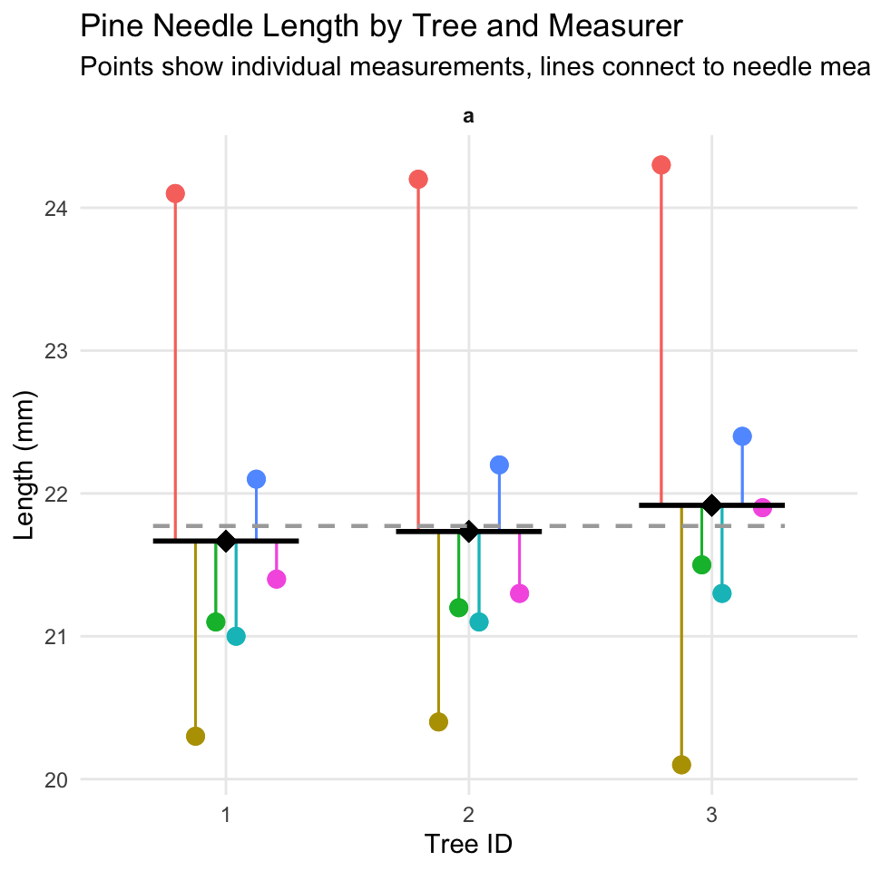
Lecture 03
NoteDownload this lecture
Lecture 2: Review of data and graphing
- We covered
- How to design a well-organized project structure
- How to implement good naming conventions
- Controlled vocabulary
- Including units in names
- Create and use metadata effectively
- Build tidy, well-structured spreadsheets
- Create visualizations with ggplot2
These are variables - do you know what they mean?
- TGW - yep its a thing
- ODO - what do you think it is?
- NO3 - what is it? Are you sure? Why might you get in legal trouble if you used this?
Lecture 3: Descriptive Statistics and Uncertainty in R and Tidyverse
The objectives:
- Understand why statistics is vital in biology
- Calculate and interpret measures of central tendency (mean, median, geometric mean)
- Calculate and interpret measures of spread (standard deviation, variance, IQR)
- Understand data transformations for skewed distributions
- Visualize descriptive statistics for our data
- Learn how to handle uncertainty in our data
We’ll use a dataset on grayling - gray_I3_I8.csv from two different lakes to explore these concepts.. like you did in the homework
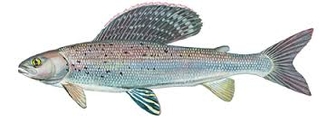

Lecture 3: Populations and Samples
Before we dive into descriptive statistics, let’s clarify some fundamental concepts:
- Population: entire group of things under consideration
- Sample: A subset of the population that is actually measured
- Sample unit: The individual thing drawn from the population
Types of populations:
- Observational population: group whose characteristics are studied passively (e.g., head width of all corn earworms in a field)
- Experimental population: actively manipulate variables to observe effects and establish cause-and-effect relationships (e.g., manipulate temperature and monitor head width)
Sampling involves
- inference - generalizing from what is observed in the sample to what is present in the population.
- Valid inference requires random sampling.
Lecture 3: Parameters vs. Statistics
It’s important to distinguish between:
- Parameters: True numerical values for a population (usually denoted by Greek letters)
- Statistics: Estimates of parameters based on samples (usually denoted by Roman letters)
For example:
- Population mean (μ) is estimated by sample mean (Y̅)
- Population standard deviation (σ) is estimated by sample standard deviation (s)
Lecture 3: Kinds of Biological Variables
Understanding the type of variable you’re working with is essential for selecting appropriate statistics:
Measurement or Quantitative Variables
- Continuous: Any value between extremes of scale is possible (e.g., mass, length)
- Discrete (meristic): Only fixed values (usually integers) between extremes are possible (e.g., bristle number, egg count)
Rank Variables (Ordinal)
- Assign only order, not quantity - student rank - 1 2 3
- Nothing implied about relative distance between values
Categorical Variables (Qualitative)
- No quantitative information (e.g., male/female, living/dead)
- Some are simplifications of quantitative variables (e.g., color instead of wavelength)
Lecture 3: Derived Variables
Derived Variables
- Percentages, Proportions: Ratio of some component to total
- Ratios: Relation of two variables
- Rates: Quantity per unit (time, mass, etc.)
- Indices: More complex derived variables (e.g., condition index)
Let’s explore our grayling dataset and identify the types of variables it contains.
Lecture 3: Why Statistics is Vital in Biology
Biology is fundamentally different from fields like physics/chemistry in that:
- Most biological phenomena are probabilistic rather than deterministic
- Responses occur with some characteristic probability, not with certainty
- All biological material varies, which is essential for evolution (recall Darwin’s postulates):
- Variation exists within populations
- Some variation is heritable
- Some heritable variation affects survival/reproduction
- Environmental conditions (in nature, lab, or greenhouse) always vary
- Measurements include error
- Multiple unmeasured causal factors influence nearly all biological systems
Statistics helps us understand biological processes in this variable world by:
- Condensing variation into summary form (Descriptive statistics)
- Testing whether observations are consistent with predictions (Inferential statistics)
Practice Exercise 1: Fish Data
TipPractice Exercise 1: Can you open the fish data
gray_I3_I8.csv and look at the structure and make a histogram?
Note the variation around the mean… some could be due to measurement error
Let’s recreate the basic histogram of fish lengths using gray_I3_I8.csv
# Write your code here to read in the file
# How do you examine the data - what are the ways you think and lets try it!Practice Exercise 2: Examining Grayling Data
TipPractice Exercise 2: Can you do this for the pine data we have collected?
Let’s examine the different data and determine what they are?
# Write your code here to read in the file
# How do you examine the data - what are the ways you think and lets try it!
# Load the grayling data
grayling_df <- read_csv("data/gray_I3_I8.csv")
# Take a look at the first few rows
head(grayling_df)# A tibble: 6 × 5
site lake species length_mm mass_g
<dbl> <chr> <chr> <dbl> <dbl>
1 113 I3 arctic grayling 266 135
2 113 I3 arctic grayling 290 185
3 113 I3 arctic grayling 262 145
4 113 I3 arctic grayling 275 160
5 113 I3 arctic grayling 240 105
6 113 I3 arctic grayling 265 145Lecture 3: Accuracy, Precision, and Bias
When taking biological measurements, understanding measurement quality is essential:
- Accuracy: Closeness of measured value to true value
- Precision: Closeness of repeated measurements to each other (repeatability)
- Bias: Systematic departure from the true value
Accuracy is a function of both precision and bias.
For statisticians, BIAS is usually a more serious problem than low precision because:
- It’s harder to detect (true value usually unknown)
- Low precision can be compensated for by increased sample size
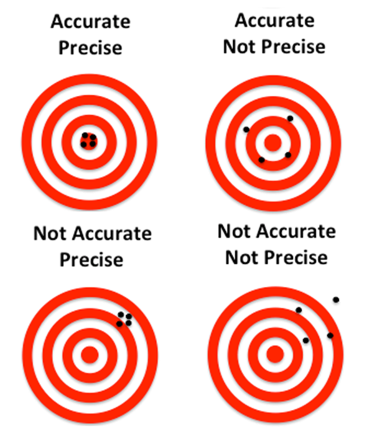
Practice Exercise: Sources of Error
TipPractice Exercise 1: What are potential sources of error in fish data?
For our grayling data, potential sources of measurement error might include:
- Precision issues:
- Variations in how fish are measured (e.g., slightly bent fish)
- Bias issues:
- Systematic underestimation of length if measurements aren’t taken from the true tip of the snout to the end of the tail
- Accuracy issues? what could they be?
Lecture 3: Measures of Central Tendency - Mean
The two most common measures of central tendency are the mean and the median.
The Arithmetic Mean The arithmetic mean is the average of a set of measurements:
\[\bar{Y} = \frac{\sum_{i=1}^{n} Y_i}{n}\]
Where:
- \(Y_i\) represents each individual measurement
- \(n\) is the total number of observations
# Calculate mean length of all fish
mean(grayling_df$length_mm)[1] 324.494# Calculate mean by lake
grayling_df %>%
group_by(lake) %>%
summarise(mean_length = mean(length_mm, na.rm=TRUE)) # A tibble: 2 × 2
lake mean_length
<chr> <dbl>
1 I3 266.
2 I8 363.Lecture 3: Measures of Central Tendency - Median
The Median
- The median is the middle value of a sorted dataset.
- If there is an even number of observations, it’s the average of the two middle values.
# Calculate median length of all fish
median(grayling_df$length_mm)[1] 324.5# Calculate median by lake
grayling_df %>%
group_by(lake) %>%
summarise(median_length = median(length_mm)) # A tibble: 2 × 2
lake median_length
<chr> <dbl>
1 I3 266
2 I8 373Lecture 3: Measures of Spread - Variance and Standard Deviation
The spread of a distribution tells us how variable the measurements are.
Variance and Standard Deviation
The variance is
\[s^2 = {\frac{\sum_{i=1}^{n} (Y_i - \bar{Y})^2}{n-1}}\]
The standard deviation is the square root of variance
- measures how far observations typically are from the mean and are in the units of the mean:
\[s = \sqrt{\frac{\sum_{i=1}^{n} (Y_i - \bar{Y})^2}{n-1}}\]
# Calculate standard deviation of fish length
var_length <- var(grayling_df$length_mm)
sd_length <- sd(grayling_df$length_mm)
# Calculate by lake
grayling_df %>%
group_by(lake) %>%
summarise(
var_length = var(length_mm),
sd_length = sd(length_mm) ) # A tibble: 2 × 3
lake var_length sd_length
<chr> <dbl> <dbl>
1 I3 801. 28.3
2 I8 2739. 52.3Lecture 3: Understanding Standard Deviation
The area under the curve of a bell shaped curve within + and - 2 standard deviations on each side includes about 95% of the data
so there is only 2.5% of the data that is outside this range
- note the similarity to the p < 0.5
- note that it is 90.91% and that is because the curve is not normal
i3 Lake Fish Length Summary:
Number of fish: 66
Mean length: 265.61 mm
Standard Deviation: 28.3 mm
Range for ±2 SD: 209 to 322.21 mm
Percentage within ±2 SD: 90.91 %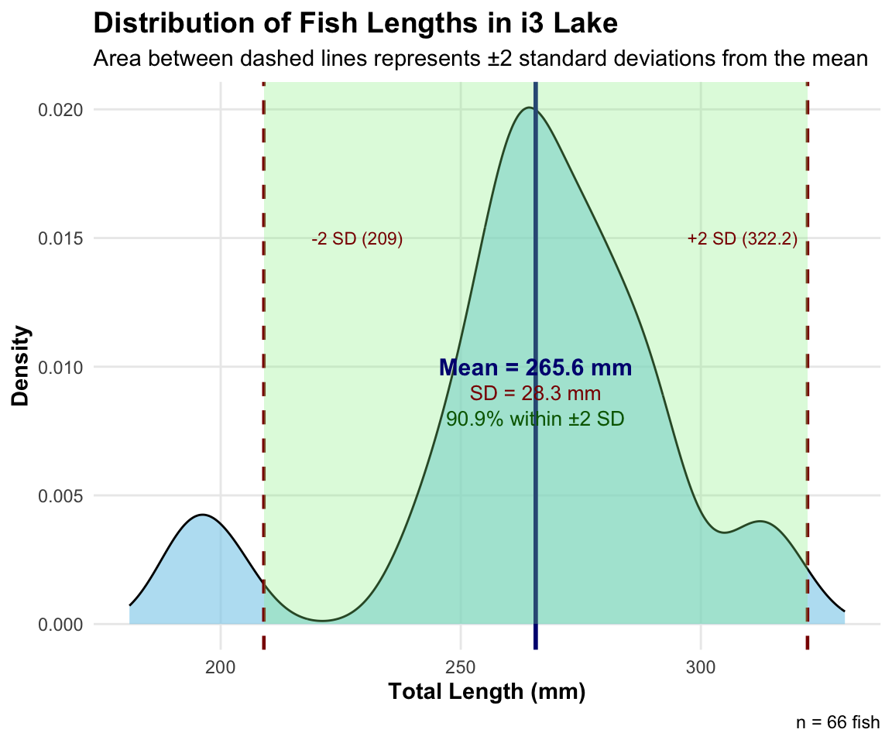
Lecture 3: Coefficient of Variation
The coefficient of variation (CV) expresses the standard deviation as a percentage of the mean:
\[CV = \frac{s}{\bar{Y}} \times 100\%\]
This is useful for comparing the variability of measurements with different units or vastly different scales.
Coefficient of variation: 10.7 %# A tibble: 2 × 2
lake cv_length
<chr> <dbl>
1 I3 10.7
2 I8 14.4Lecture 3: Interquartile Range
The interquartile range (IQR) is the range of the middle 50% of the data:
\[IQR = Q_3 - Q_1\]
Where \(Q_1\) is the first quartile (25th percentile) and \(Q_3\) is the third quartile (75th percentile).
First quartile: 270.75 mmThird quartile: 377 mmInterquartile range: 106.25 mm# A tibble: 2 × 4
lake q1 q3 iqr
<chr> <dbl> <dbl> <dbl>
1 I3 256 280 24
2 I8 340 401 61Lecture 3: Understanding Percentiles
- it is the same as quartiles but more finely divided and will come into play later on
Percentiles are values that divide a dataset into 100 equal parts.
- The 25th percentile is the first quartile (Q1)
- The 50th percentile is the median
- The 75th percentile is the third quartile (Q3)
- The IQR is the difference between Q3 and Q1.
# Calculate percentiles
percentiles <- quantile(grayling_df$length_mm,
probs = c(0.1, 0.25, 0.5, 0.75, 0.9))Lecture 3: Standard Deviation vs. Interquartile Range
The standard deviation and interquartile range both measure spread, but:
Standard deviation: Sensitive to outliers
Interquartile range: Robust against outliers
When the data is approximately normal, the IQR ≈ 1.35 × standard deviation.
# A tibble: 2 × 4
lake sd iqr ratio_iqr_sd
<chr> <dbl> <dbl> <dbl>
1 I3 28.3 24 0.848
2 I8 52.3 61 1.17 Lecture 3: Data Transformations for Skewed Distributions
Biological data are often skewed (asymmetrical), which can make the arithmetic mean less representative of central tendency. Data transformations can help address this issue.
Logarithmic Transformation
The logarithmic transformation is one of the most common for right-skewed biological data:
When data are log-normally distributed, the geometric mean often provides a better measure of central tendency than the arithmetic mean.
But there are issues and it might not be good…
detecting differences in geometric means, not arithmetic means
- geometric is all values multiplied taken to the nth root
Can’t handle zeros without adding arbitrary constants (log(x+1) transformations), which can bias results
Arithmetic mean of original data: 265.6 mm
Geometric mean (back-transformed mean of logs): NA mm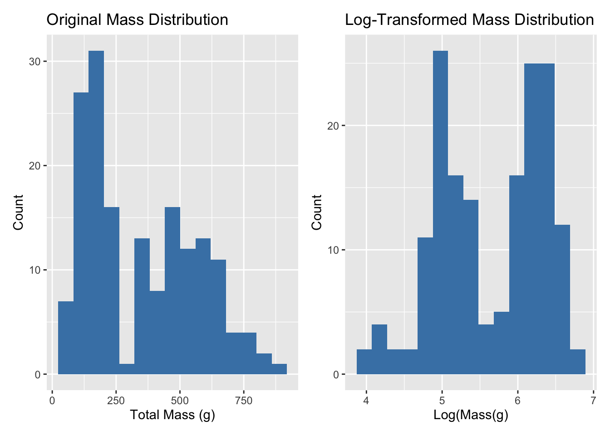
Lecture 3: When to Use Transformations
To tranform data to a “normal” distribution we can use the following transformations…
- Log transformation: When data are right-skewed or follow multiplicative rather than additive processes
- Square root transformation: For count data or data where variance increases with the mean
- Inverse transformation: For strongly right-skewed data
- Arcsine square root transformation: For proportions or percentages (though logistic regression is often preferred now)
In a reflection the parameter k is typically chosen to be a value that’s larger than the maximum value
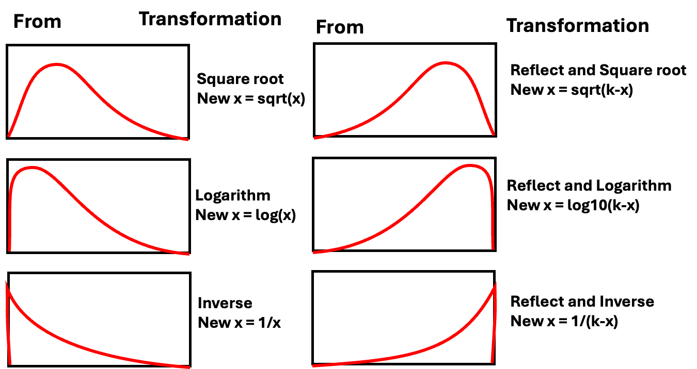
Lecture 3: Visualizing Distributions - Histograms
Histograms
Histograms show the frequency distribution of our data.
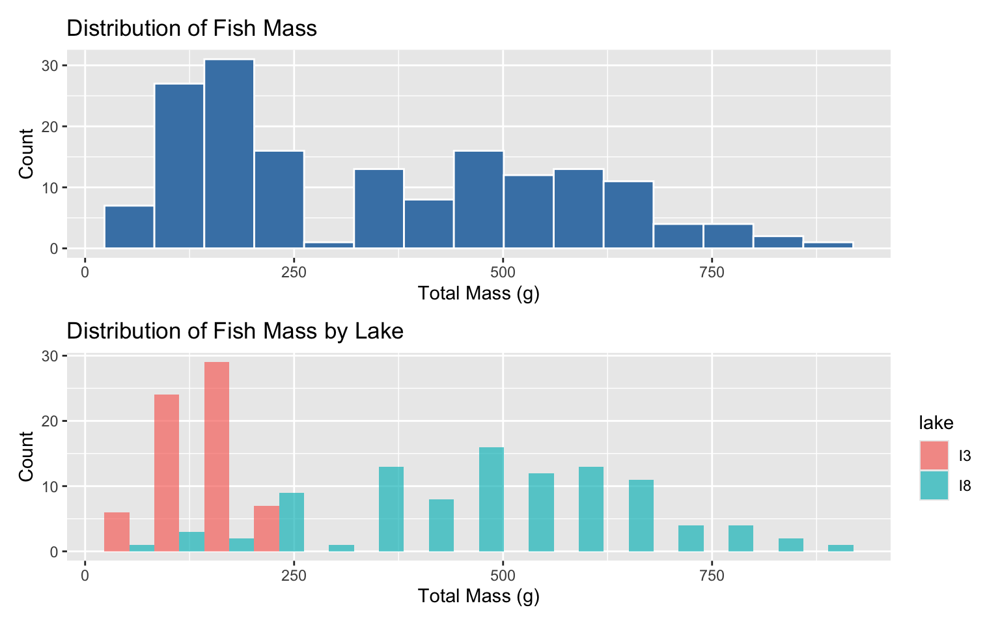
Lecture 3: Visualizing Distributions - Box Plots
Box Plots
Box plots show the median, quartiles, and potential outliers.
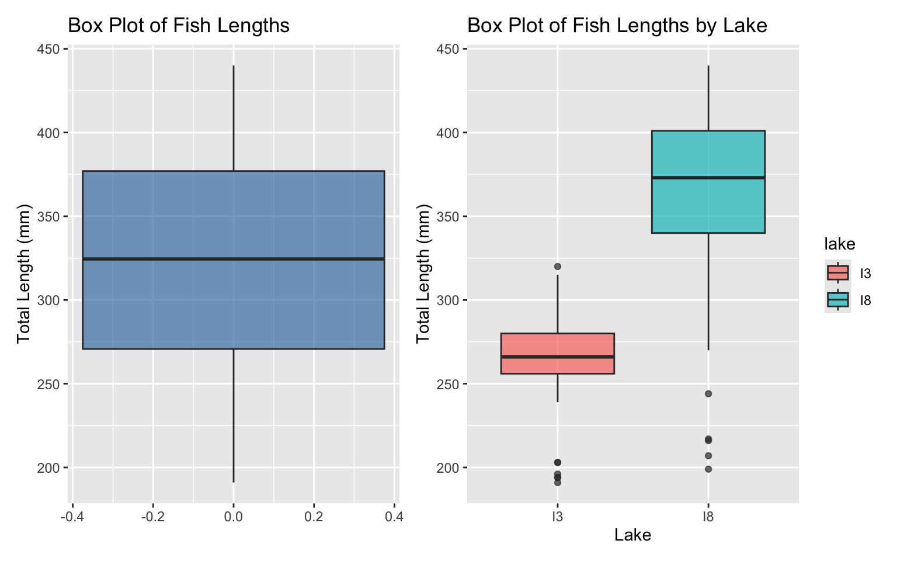
Lecture 3: Comparing Mean vs. Median
The mean and median measure different aspects of a distribution:
Mean: Center of gravity of the distribution
Median: Middle value of the data
When a distribution is symmetric, the mean and median are similar. When it’s skewed or has outliers, they can differ significantly.
# A tibble: 2 × 6
lake mean median sd iqr skewness
<chr> <dbl> <dbl> <dbl> <dbl> <dbl>
1 I3 266. 266 28.3 24 -0.883
2 I8 363. 373 52.3 61 -1.09 Lecture 3: Histogram Plot - Mean vs. Median
The mean and median measure different aspects of a distribution:
Mean: Center of gravity of the distribution
Median: Middle value of the data
When a distribution is symmetric, the mean and median are similar. When it’s skewed or has outliers, they can differ significantly.

Lecture 3: Handling Missing Values
Let’s examine how missing values affect our descriptive statistics by looking at the mass variable, which has some missing data.
[1] 2Mean mass without handling NAs: NA g
Mean mass with na.rm=TRUE: 351.2289 g# A tibble: 2 × 5
lake mean_mass median_mass sd_mass n_missing
<chr> <dbl> <dbl> <dbl> <int>
1 I3 150. 147 42.2 0
2 I8 484. 490 176. 2Lecture 3: Best Practices for Missing Values
- Always check for missing values in your data before calculating statistics.
- Use na.rm = TRUE when calculating summary statistics to handle missing values.
- Report the number of missing values along with your statistics.
- Consider whether the missing values are random or might introduce bias.
Sampling from a Population
Now that we have estimates of the sample we need to relate that to the population
In reality, we rarely know the true population parameters. When studying fish in lakes I3 and I8:
- The population includes all grayling fish in each lake
- The true population mean (μ) and standard deviation (σ) are unknown
- Our dataset is a sample from this population
- We use the sample mean (x̄) to estimate μ
- Sampling introduces random variation in our estimates
Let’s demonstrate how different samples from the same population can give different estimates.
If we could sample all fish in the lake, we would know the true mean length. But that’s usually impossible in ecology!
Demonstrating Sampling Variation
Let’s take several random samples from Lake I3 and see how the sample means vary:
# Filter for Lake I3
i3_data <- grayling_df %>% filter(lake == "I3")
# Function to take a random sample and calculate the mean
sample_mean <- function(data, sample_size) {
sample_data <- sample_n(data, sample_size)
return(mean(sample_data$length_mm))
}
# Take 10 different samples of size 15 from Lake I3
set.seed(123) # For reproducibility
sample_size <- 15
sample_means <- replicate(50, sample_mean(i3_data, sample_size))
# Create a data frame with sample numbers and means
samples_df <- data.frame(
sample_number = 1:50,
sample_mean = sample_means
)Plotting Sample Variation
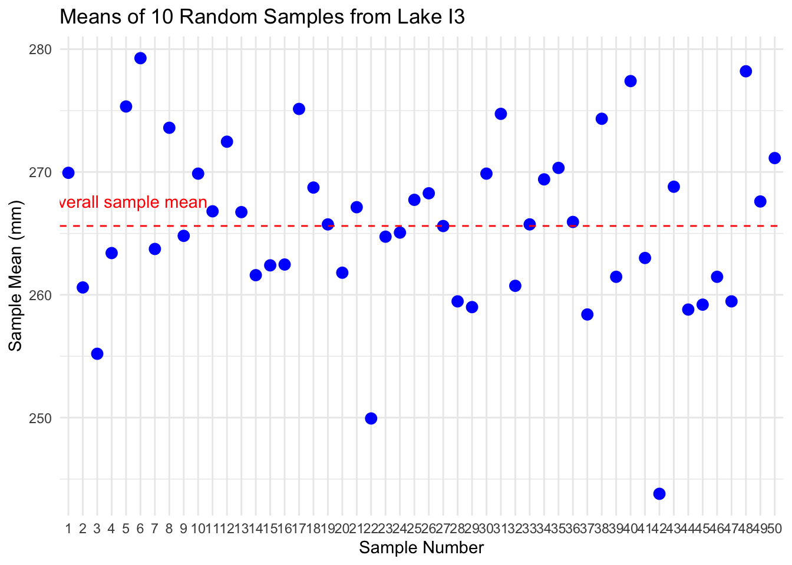
Notice how each sample’s mean differs from the overall mean. This demonstrates sampling variation.
Standard Error: Quantifying Uncertainty
The standard error of the mean (SEM) measures the precision of a sample mean as an estimate of the population mean.
Formula: \(SE_{\bar{x}} = \frac{s}{\sqrt{n}}\)
Where:
- s is the sample standard deviation
- n is the sample size
The standard error tells us:
- How much uncertainty is in our estimate
- How much sample means are expected to vary
- How close our sample mean is likely to be to the true population mean
Remember:
- Standard deviation (s) describes the variability in the individual data points
- Standard error (SE) describes the variability in the sample mean itself
- As sample size increases, SE decreases (more precise estimate)
# Calculate mean, SD, and SE for each lake
grayling_stats <- grayling_df %>%
group_by(lake) %>%
summarize(
mean_length = mean(length_mm),
sd_length = sd(length_mm),
n = n(),
se_length = sd_length / sum(!is.na(length_mm))
)
# Display the statistics
grayling_stats# A tibble: 2 × 5
lake mean_length sd_length n se_length
<chr> <dbl> <dbl> <int> <dbl>
1 I3 266. 28.3 66 0.429
2 I8 363. 52.3 102 0.513Sampling Distribution of the Mean
The sampling distribution of the mean is the theoretical distribution of all possible sample means of a given sample size from a population.
Important properties:
- It is centered at the population mean (μ)
- Its standard deviation is the standard error (σ/√n)
- For large sample sizes, it approaches a normal distribution (Central Limit Theorem)
The larger the sample size:
- The narrower the sampling distribution
- The smaller the standard error
- The more precise our estimate of the population mean
Let’s simulate the sampling distribution for Lake I3 fish data.
Simulating the Sampling Distribution
Let’s simulate taking many samples from Lake I3 to visualize the sampling distribution:
# Filter for Lake I3
i3_data <- grayling_df %>% filter(lake == "I3")
# Number of samples to simulate
num_simulations <- 1000
sample_size <- 20 # change the number and examine the range of values
# Simulate many samples and calculate means
set.seed(46) # For reproducibility
simulated_means <- replicate(num_simulations, sample_mean(i3_data, sample_size))
# Calculate the mean and standard deviation of the simulated means
mean_of_means <- mean(simulated_means)
sd_of_means <- sd(simulated_means)
# Create a data frame with the simulated means
simulated_df <- data.frame(sample_mean = simulated_means)
# Plot the sampling distribution
ggplot(simulated_df, aes(x = sample_mean)) +
geom_histogram(bins = 30, fill = "blue", alpha = 0.7) +
geom_vline(xintercept = mean(i3_data$length_mm),
linetype = "dashed", color = "red", linewidth = 1) +
annotate("text", x = mean(i3_data$length_mm) + 2, y = 50,
label = "Full sample mean", color = "red") +
labs(title = "Simulated Sampling Distribution of the Mean",
subtitle = paste("Based on", num_simulations, "samples of size", sample_size),
x = "Sample Mean (mm)",
y = "Frequency") +
theme_minimal()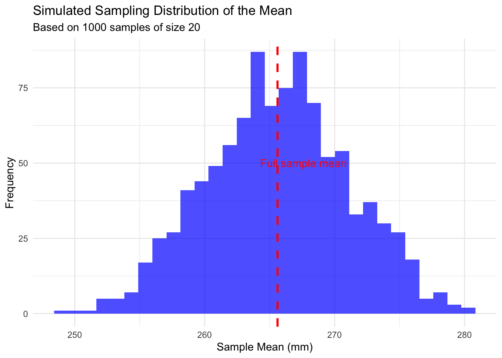
Notice that the simulated sampling distribution:
- Is approximately normally distributed
- Is centered around the overall sample mean
- Has a spread that is related to the standard error
Standard Error and Sample Size
Let’s see how the standard error changes with different sample sizes:
Sample Size vs. Standard Error
# Display the results
# Plot how SE changes with sample size
results_long <- pivot_longer(results,
cols = c(empirical_se, theoretical_se),
names_to = "se_type",
values_to = "standard_error")
ggplot(results_long, aes(x = sample_size, y = standard_error, color = se_type)) +
geom_line() +
geom_point(size = 3) +
scale_x_continuous(breaks = sample_sizes) +
labs(title = "Standard Error vs. Sample Size",
subtitle = "Standard error decreases as sample size increases",
x = "Sample Size",
y = "Standard Error",
color = "SE Type") +
theme_minimal()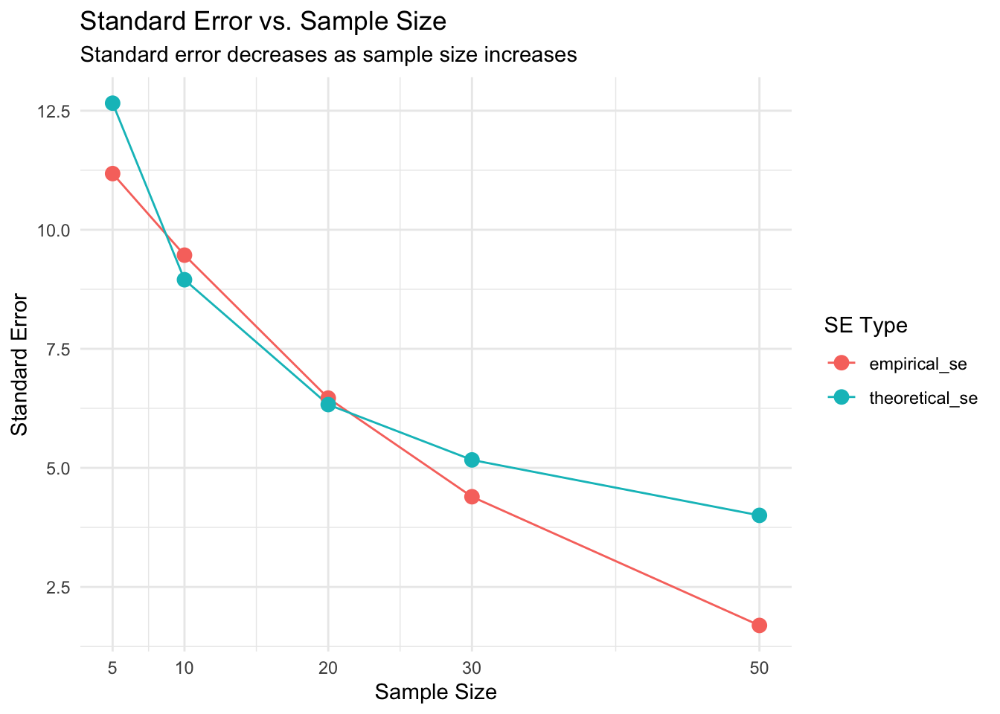
Confidence Intervals
A confidence interval is a range of values that is likely to contain the true population parameter.
The 95% confidence interval for the mean is approximately:
\(\bar{x} \pm 2 \times SE_{\bar{x}}\)
This “2 SE rule of thumb” means:
- The interval extends 2 standard errors below and above the sample mean
- About 95% of such intervals constructed from different samples would contain the true population mean
Confidence intervals provide a way to express the precision of our estimates.
Calculating Confidence Intervals for Grayling Data
Let’s calculate and visualize the 95% confidence intervals for the mean fish length in each lake:
# Calculate 95% confidence intervals
grayling_ci <- grayling_df %>%
group_by(lake) %>%
summarize(
mean_length = mean(length_mm),
sd_length = sd(length_mm),
n = n(),
se_length = sd_length / sqrt(n),
ci_lower = mean_length - 2 * se_length,
ci_upper = mean_length + 2 * se_length
)
# Display the confidence intervals
grayling_ci# A tibble: 2 × 7
lake mean_length sd_length n se_length ci_lower ci_upper
<chr> <dbl> <dbl> <int> <dbl> <dbl> <dbl>
1 I3 266. 28.3 66 3.48 259. 273.
2 I8 363. 52.3 102 5.18 352. 373.Visualizing Confidence Intervals
# Plot with confidence intervals
ggplot(grayling_ci, aes(x = lake, y = mean_length, fill = lake)) +
geom_bar(stat = "identity", alpha = 0.7) +
geom_errorbar(aes(ymin = ci_lower, ymax = ci_upper),
width = 0.2) +
labs(title = "Mean Fish Length by Lake with 95% Confidence Intervals",
subtitle = "Error bars represent 95% confidence intervals",
x = "Lake",
y = "Mean Length (mm)") +
theme_minimal()
Different Types of Error Bars
Let’s compare different ways of displaying uncertainty in our estimates:
# Calculate statistics for different types of error bars
grayling_error_bars <- grayling_df %>% group_by(lake) %>%
summarize(mean_length = mean(length_mm),
sd_length = sd(length_mm), n = n(),
se_length = sd_length / sqrt(n),
ci_lower = mean_length - 1.96 * se_length,
ci_upper = mean_length + 1.96 * se_length,
one_sd_lower = mean_length - sd_length,
one_sd_upper = mean_length + sd_length)
# Create a data frame for plotting different error types
lake_i3 <- grayling_error_bars %>% filter(lake == "I3")
error_types <- data.frame(
error_type = c("Standard Deviation", "Standard Error", "95% Confidence Interval"),
lower = c(lake_i3$one_sd_lower,
lake_i3$mean_length - lake_i3$se_length,
lake_i3$ci_lower),
upper = c(lake_i3$one_sd_upper,
lake_i3$mean_length + lake_i3$se_length,
lake_i3$ci_upper))Comparing Error Bar Types
# Plot the comparison
ggplot() +
geom_point(data = lake_i3, aes(x = "Mean",
y = mean_length), size = 4) +
geom_errorbar(data = error_types,
aes(x = error_type, ymin = lower,
ymax = upper, color = error_type),
width = 0.2, linewidth = 1) +
labs(title = "Different Types of Error Bars for Lake I3",
subtitle = "Comparing SD, SE, and 95% CI",
x = "",
y = "Length (mm)",
color = "Error Bar Type") +
theme_minimal() +
theme(legend.position = "none")
Key Takeaways
- The standard error measures the precision of a sample statistic as an estimate of a population parameter
- The standard error of the mean decreases as sample size increases: \(SE_{\bar{x}} = \frac{s}{\sqrt{n}}\)
- The sampling distribution shows the variation in sample statistics that would be expected due to random sampling
- Confidence intervals provide a range of plausible values for the population parameter
- Larger sample sizes provide more precise estimates (narrower confidence intervals)
- When reporting results, always include a measure of precision (SE or
Lecture 3: Conclusion
In this lecture, we’ve explored:
- Why statistics is essential in biology
- Types of biological variables and their properties
- Accuracy, precision, and bias in measurements
- Measures of central tendency (mean, median, geometric mean)
- Measures of spread (standard deviation, variance, and interquartile range)
- Data transformations for skewed distributions
- Visualization techniques for understanding distributions
- Handling missing values
These tools form the foundation of statistical analysis and will be essential as we move forward to more complex statistical methods.